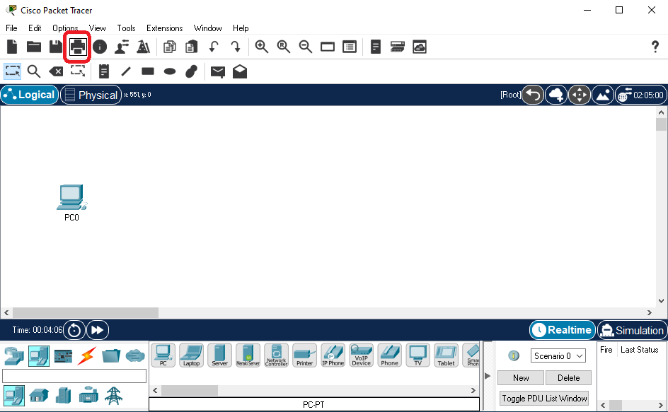
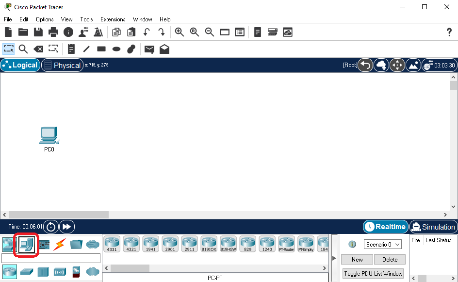
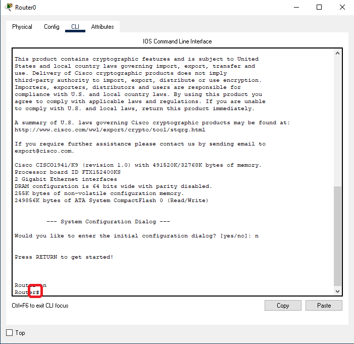
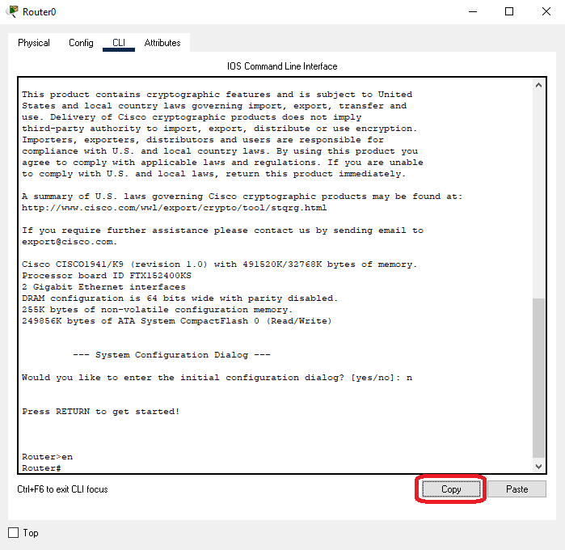

Tab Navigation
User can navigate accross Packet Tracer using the 'TAB' and the 'Arrow' keys. Selections may be activated via either the 'Space' key or the 'Enter/Return' key. Some actions may be cancelled using the 'Escape' key.
In addition, many actions are also bound to a keyboard shortcut. Refer to the Keyboard Shortcuts section for details.


In some widgets, the Tab key is a special key. Those interfaces may absorb the tab key for their special purpose. For example, the CLI uses the Tab key as a special function. To exit the focus on the CLI, use 'ctrl+F6' on Windows and 'command+F6' on macOS. Certain widgets may not have a key combination to exit focus.

